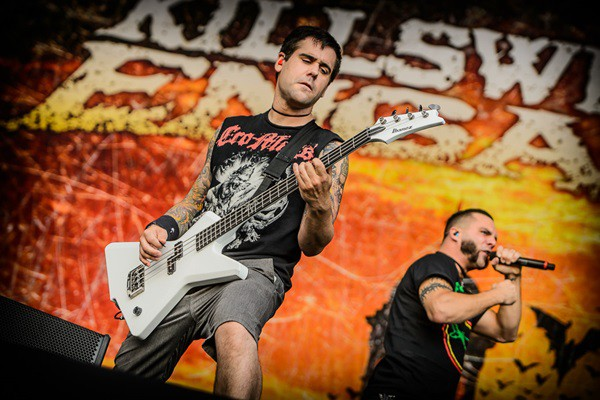

Killswitch Engage
Banda americana de metalcore formada em 1999
em Westfield, Massachusetts, decorrente da saída
de membros das bandas Overcast e Aftershock.
A banda obteve uma maior notoriedade após o
lançamento do álbum The End of Heartache,
com 500 mil exemplares vendidos nos Estados
Unidos. A canção título foi indicada ao Grammy
Awards de 2005. Killswitch Engage já marcou
presença em muitos festivais importantes como
Wacken Open Air, Reading and Leeds Festivals,
Ozzfest, Download Festival, RAR, Mayhem
Festival e Monsters of Rock. Atualmente
é uma das bandas que formam o movimento
New Wave of American Heavy Metal.

Show realizado no Brasil, em São Paulo no Monsters of Rock de 2013.
Localização: